Software trainer (Pryda Build v5). I also keep a small garage log for a Ford Territory and a BMW E46. Use the
filters to switch context or jump straight in:
Hi, I'm Chris Daniells, a software trainer working with Pryda Build v5 and a car enthusiast
tinkering on a Ford Territory and a BMW E46. This is a lightweight, Medium style blog of training write ups
and workshop logs.
Pryda Build v5 — training approach that sticks
work • trainer notes
My training style balances concept first with hands-on repetition. For Pryda Build v5 I
teach the Wall design. I always start with small jobs, and teach them to fully detail this. Then I give them
the same house, but turned 180 degrees, and time them putting it in a second time. This builds muscle memory,
and we see at least 2 hours of time saved this second time. Then we look at more complex jobs.
To ensure accruacy and following of code
students start with a blank project and we have a pre built sample to compare results at the end
give workflow template, and note to students that they will eventually need to make their own to match
their companies workflow
when you think you have it right, check, then check again, and again. As detailers, you need to be as
accurate as possible, so eventually you train yourself to do this and still be time efficient.
finish by printing reports that validate all designs, and show site layout
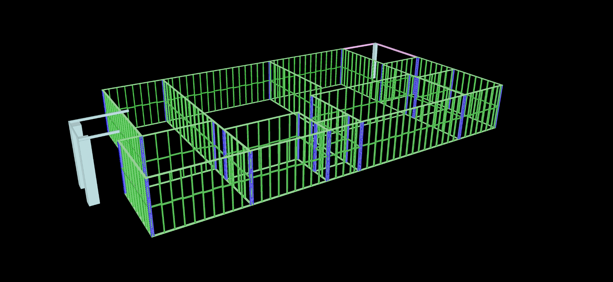
Framing flow in 3D helps cement the mental model.
Common pitfalls I fix in the first 30 minutes
work • onboarding
Data location & backups: point builds to a known network path and confirm snapshots are
running.
Template drift: lock down company defaults for studs, lintels, bracing tags, and title
blocks.
Navigation speed: teach pane layouts and a couple of right-click secrets to halve clicks.
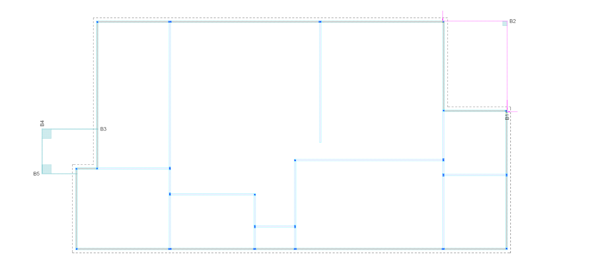
Plan view tidy-up: lineweights, layers and labels.
Ford Territory — side mirror replacement
ford territory • workshop diary
The Territory’s passenger mirror finally gave up. Quick notes and process I followed so I can reference later
and anyone else can repeat it:
disconnect battery, pop the door card starting at the corner clip
unplug the mirror harness, three bolts hold the unit — support the mirror as you loosen the last bolt
test the new unit before refitting the trim; finish with clip check all around
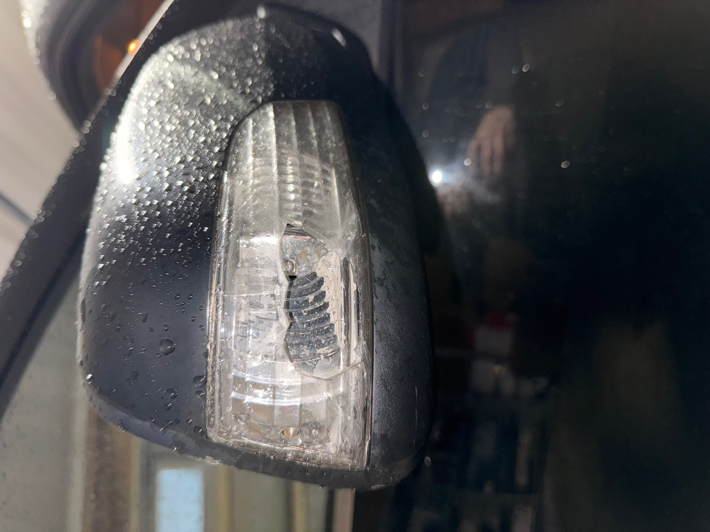
ford territory mirror 1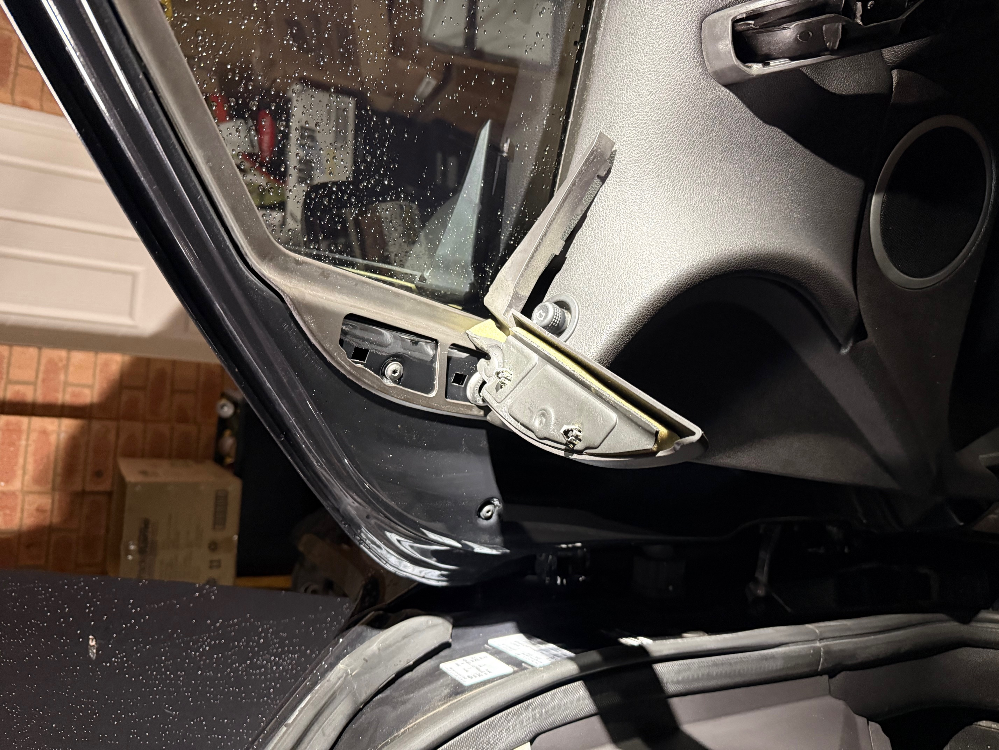
ford territory mirror 2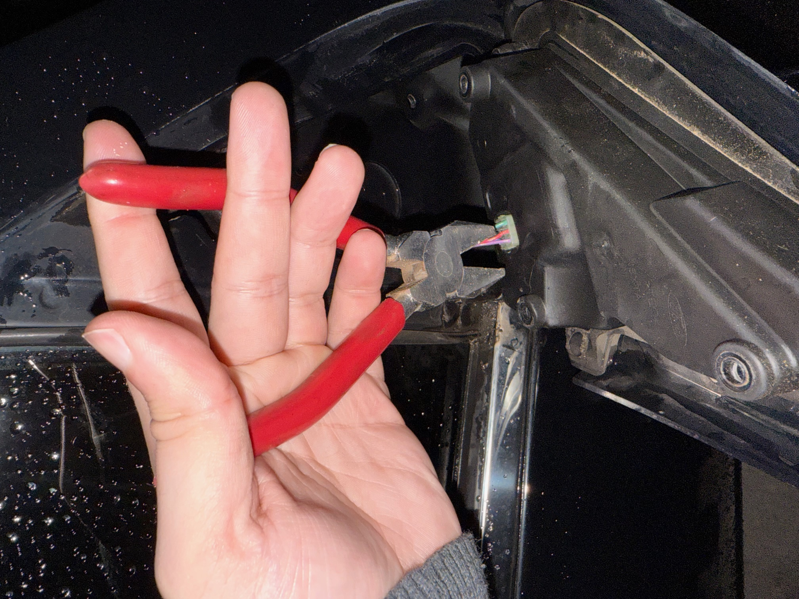
ford territory mirror 3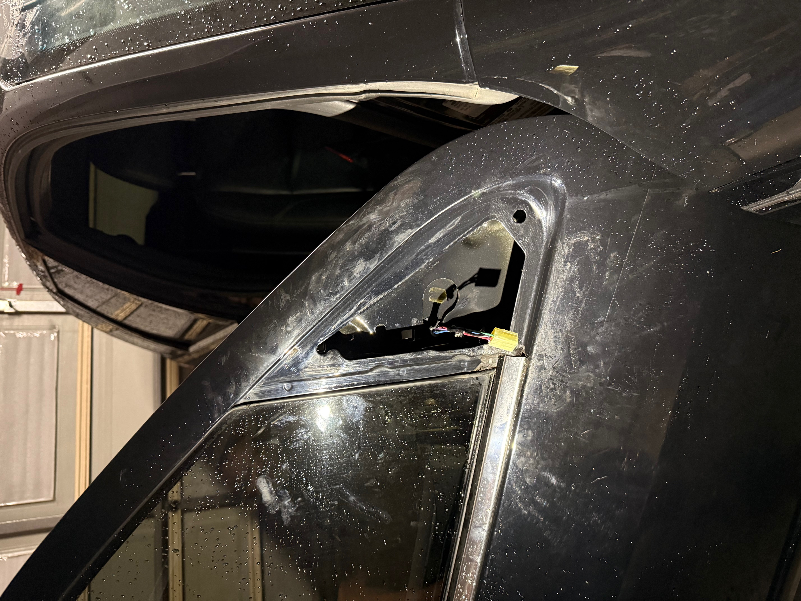
ford territory mirror 4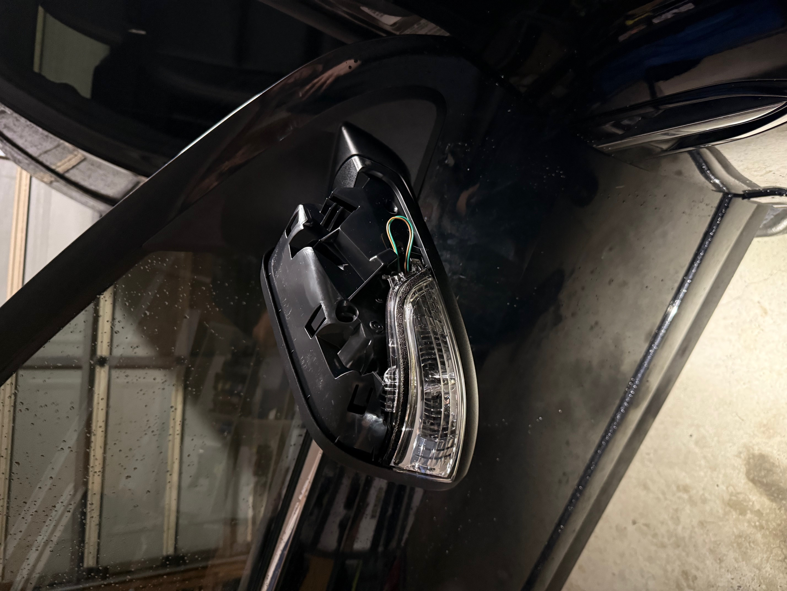
ford territory mirror 5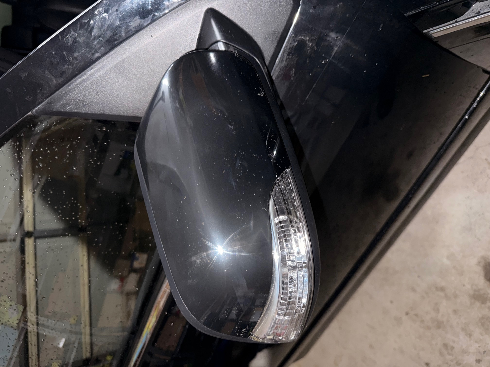
ford territory mirror 6
BMW E46 — Car repair log
bmw e46 • maintenance
This is the running log of repairs or changes I've made to the car. Due to the E46's age, issues can crop up
with fluids, bushings, and other little gremlins that appear at 20 years old. Besides the hood and bumper paint,
I did everything else myself which was very rewarding. Getting hands on with things like this gives invaluable
experience. Changed wheels to HUSSLA 18" Hyper Black, on Pirelli's. Also put in a custom soundsystem with 2 12" subwoofers located in the boot.
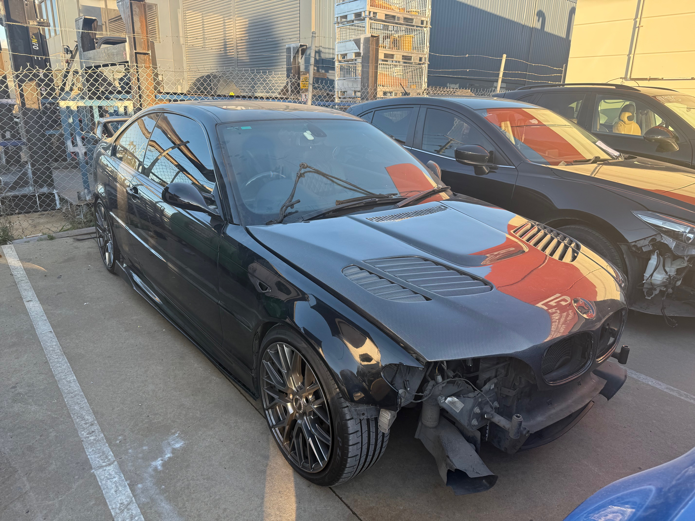
e46 front bumper replacement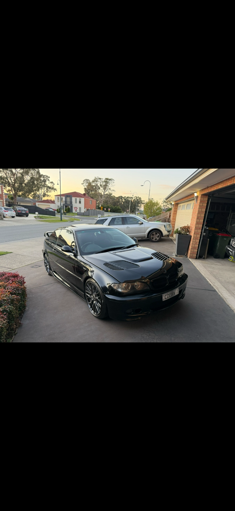
e46 new hood fitted, painted, and new bumper fitted, painted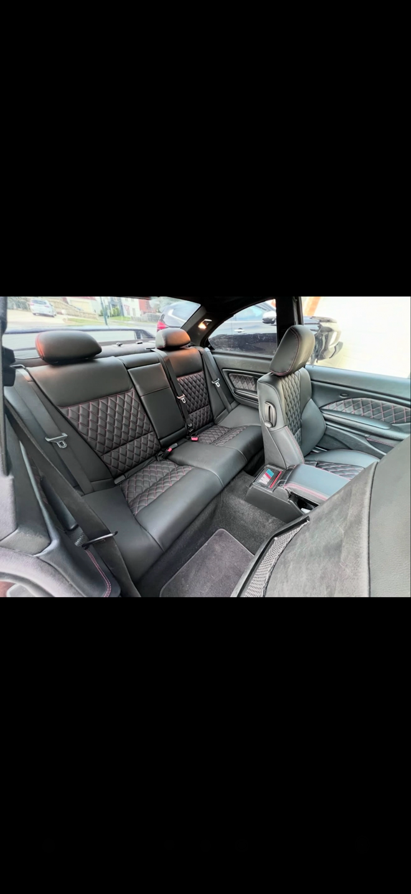
e46 custom interior
BMW E46 — bits & bobs + interior swap
bmw e46 • interior
Collected a few photos: swapping the interior trim, refreshing switches, and making the cabin feel new again.
I prefer OEM plus subtle upgrades that look factory, age gracefully, and don’t rattle. So taking photos as I
went was an essential way to make sure evrything got put back exactly as it was found. Gives you a greater
understanding of how car interiors work. Could not have done this without the help of my brothers and dad
motivation and help.